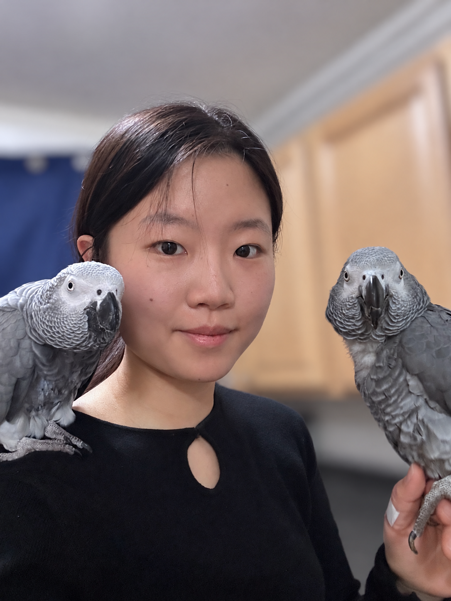

About

Hi! I am a second-year master's student at Tufts University Department of Computer Science. I am affiliated with Tufts AI, Design, and Accessibility (TADA) Lab and Pepperberg Comparative Cognition Lab.
Prior to this, I completed my undergraduate studies in Comparative Literature and Cognitive & Brain Science at Tufts, where I learned broadly about human thought and intentionality. While there, I worked with EEG and eyetracking at Urry Lab.
Outside of CS research, I study and perform European early music on the viola da gamba.
Animal cognition · Human–computer interaction · Accessible AI · Embodied cognition
Research
I am interested in how individuals of different capacities - humans and non-humans - experience the world.
My research currently looks at how 1). humans collaborate with technology , or 2). uses technology as a conduit to study behavior